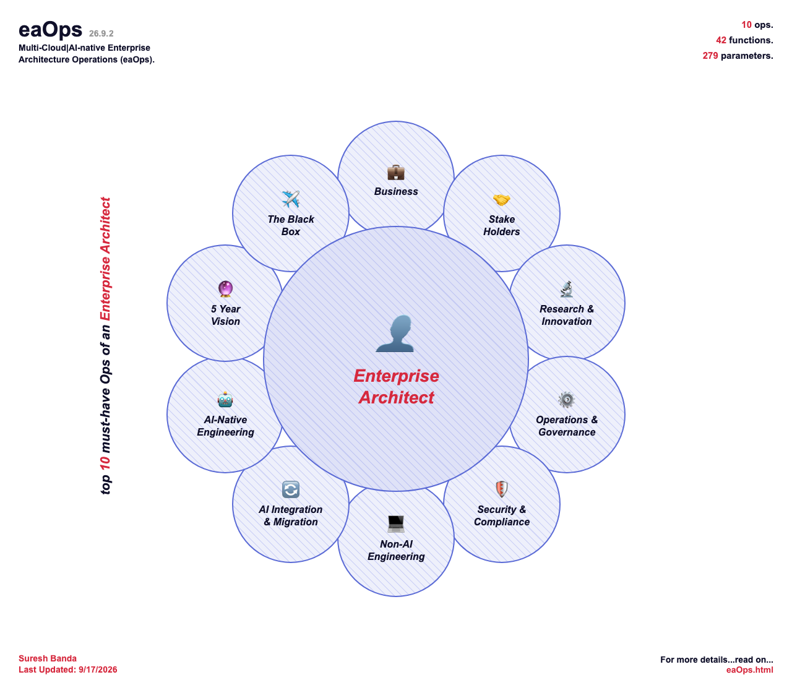

eaOps (Multi-Cloud|AI-native Enterprise Architecture Operations) is a reference checklist for the capabilities an enterprise architect needs to plan for, grounded throughout in a single hypothetical use case — Customer, Products & Orders (CPO) — so every item has a concrete example behind it rather than staying abstract.
The document's own structure is 10 Ops, each broken into Functions, each broken into Parameters — every Parameter carrying four parallel descriptions (Azure, GCP, AWS, open-source) so the same capability is never tied to one vendor.

Op 1 covers the business case for CPO before any architecture gets built. 1.1 Business Architecture is the financial and contractual foundation — ROI/TCO modeling, build-vs-buy analysis, pricing and SLA definitions, error budgets, and the outsourced-engagement artifacts (SOW, Engagement Billing Model) that apply when the work is contracted out. 1.2 FinOps & Cost Optimization is the ongoing cost discipline once it's built — cloud cost dashboards, IaC cost estimation, reserved capacity, AI token spend tracking, and the FinOps practice that ties it together.
Op 2 covers everyone outside core engineering with a stake in CPO. 2.1 Customer Success is the external-facing side — status pages, support ticketing, onboarding/UAT flows, sandbox environments, white-labelling, and the client engagement portal for service-delivery clients. 2.2 Executive & Cross-Department Visibility is the internal reporting side — executive KPI dashboards, weekly digests, a data catalog, and self-service analytics/experimentation for other teams. 2.3 Skill & Resource Management is the staffing side — a skills matrix, hiring-gap analysis, and training budget, following the same build-vs-buy fork applied to people instead of software.
Op 3 is a single function, 3.1 Research & Innovation, deliberately scoped as a watch-list rather than a roadmap commitment — Tech Radar and Innovation Pipeline tracking, plus emerging/speculative items (Quantum AI, Post-Quantum Cryptography, Organoid AI, Self-Hosted GPU Infrastructure, Multi-Provider AI Redundancy) that are being monitored, not built, alongside ongoing vendor, role, and AI/ML research trend tracking.
Op 4 is how CPO stays reliable and disciplined once it's running. 4.1 SRE & Operations is the reliability operating model — SLOs/error budgets, incident response, on-call, postmortems, DR testing, and capacity planning, plus the runbook for executing outsourced/client engagements themselves. 4.2 Architecture Governance is the decision-making discipline — C4 diagrams, ADRs, coding/design standards, API and UI/DB design guidelines, and the Architecture Review Board gate that also covers vendor-proposed technology in outsourced work. 4.3 Change & Release Management is how changes actually ship — release calendars, canary/blue-green rollout, the Change Advisory Board, and Definition of Done/Ready. 4.4 Migration & Upgrade Management is planned technical change — schema migrations, framework upgrades, API deprecation, and cloud migration strategy (the 7 Rs).
Op 5 covers security end to end. 5.1 Identity & Governance is who can access what — IdP, RBAC/workload identity, secrets management, privileged identity, and conditional access. 5.2 DevSecOps is security built into the pipeline — SAST, SCA, container scanning, and DevOps security posture management. 5.3 Security Operations (SecOps) is live threat monitoring — SIEM, CSPM, XDR, and on-call alerting integration. 5.4 Penetration Testing & Ethical Hacking is adversarial validation — OWASP ZAP, manual and third-party pen testing, vulnerability disclosure, bug bounty, and red team/blue team exercises. 5.5 License Compliance is open-source license risk — scanning, policy, and a combined vulnerability/license gate. 5.6 EOL & Package Management is dependency lifecycle — EOL tracking, automated updates, and vulnerability policy.
Op 6 is the full engineering stack, entity by entity and layer by layer — serverless-primary throughout, with Kubernetes/VMs only as an explicit secondary path. 6.1 Traffic & Networking — CDN, DDoS protection, load balancing, rate limiting. 6.2 Frontend — the client stack across web/desktop/mobile/wearable/TV. 6.3 Gateway & API Management — API gateway, versioning, feature flags, developer portal, GraphQL. 6.4 Backend Services — the Customer/Product/Order/Audit/Identity APIs plus multi-tenancy, sagas, and dead-letter handling. 6.5 Data & Messaging — database choice, caching, the event bus, and BI. 6.6 Resilience & Reliability — retry/circuit-breaker, health checks, autoscaling, multi-AZ HA, chaos engineering. 6.7 Observability — tracing, monitoring, OpenTelemetry, log aggregation. 6.8 Testing & Quality — unit through E2E and performance testing. 6.9 Localization & Accessibility — i18n/l10n, RTL, timezones. 6.10 Infrastructure & Cost — container registry/runtime, CI/CD, IaC, cost optimization. 6.11 Developer Experience — local dev setup and AI coding assistants. 6.12 Cross-Cell/Service Integration ties it together — the cell-based architecture pattern and the full Customer/Product/Order CRUD event set that powers 8.7's multi-agent workflow.
Op 7 splits it into three paths: 7.1 AI-Legacy Integration bolts AI onto the legacy system from outside — a sidecar/facade wraps it (7.1.1), a CDC pipeline feeds its quality-checked, PII-redacted data into a vector store for RAG (7.1.2, 7.1.4), and API-fication exposes it via REST/MCP so AI agents can call it as a tool (7.1.3) — none of this touches the legacy code itself. 7.2 AI-Native Migration is the actual upgrade: the Strangler Fig pattern incrementally swaps out legacy rule-based logic for an ML/LLM reasoning module one piece at a time, guarded by parallel-run validation, a fallback circuit breaker, human-in-the-loop escalation for low-confidence calls, and post-cutover drift monitoring (7.2.2–7.2.5) before the legacy logic is fully replaced. 7.3 AI-Assisted Code Migration is a different axis — using AI coding assistants to accelerate the migration work itself (translating legacy code, generating a golden regression suite, recovering lost documentation), independent of whether the target system ends up AI-native.
Where Op 7 is about touching AI onto legacy systems, Op 8 is the AI stack itself. 8.1 AI Services is the app-facing layer — the SDK/agent code calls (8.1.1–8.1.6, single- and multi-agent) plus the safety and quality gates around them (AI Guardrails, AI Red Teaming, Prompt Versioning, AI Evals, Prompt Sanitization — 8.1.7–8.1.11). 8.2 AI Platform is what backs those calls — the model, search/RAG, storage, and OCR services. 8.3 AI Capacity & Governance is the operational layer on top — capacity reservations, quota/region planning, model lifecycle tracking, network isolation, data residency, and human-in-the-loop override controls. 8.4 Responsible AI is the ethics/fairness layer, distinct from 8.3's ops governance — bias testing, explainability documentation, user-facing transparency disclosure, and a review-board/impact-assessment gate for high-risk AI features before they ship. 8.5 AI DevOps & Delivery Pipeline is how AI changes actually ship — continuous security monitoring (AISecOps), a prompt/model-aware CI/CD pipeline, tracing/debugging, a dev sandbox, human QA review, and canary/shadow rollout with auto-rollback. 8.6 AI Deployment & Channels is where the shipped AI capability actually runs and how users reach it — inference pattern, multi-region deployment, and the delivery surfaces (in-app, chat platforms, voice/IVR, partner API). 8.7 CPO Multi-Agent Workflow puts it all together as a worked example, using the Agent → Skill → Tool pattern: a Customer, Product, and Order Agent (8.7.1–8.7.3), the Skills they share instead of reimplement (8.7.4), and two complementary coordination paths — async, driven by the 6.12 CRUD events (8.7.5), and sync, via a top-level orchestrator (8.7.6).
Op 9 is forward-looking, not built or committed — distinct from Op 3's watch-list of external technologies being tracked, this is the trajectory of CPO's own architecture over the next five years. 9.1 Platform Evolution is where the built system (Ops 1–6) is headed — multi-tenant SaaS, genuine active-active multi-cloud, CPO exposed as a developer platform, and periodic outsource-vs-insource rebalancing as it matures. 9.2 AI Maturity Roadmap is where the AI capability (Ops 7–8) is headed — completing the Strangler Fig legacy sunset, bounded autonomous agent operations, a self-optimizing eval/deployment loop, and the CPO Orchestrator Agent maturing into a full planner.
Op 10 is a forensic capability, not an operational one — modeled on an aircraft's flight recorder, built specifically to answer "what happened right before this crashed," not to monitor day-to-day health (that's 6.7 Observability) or log business changes (that's 6.4.6 Audit API). 10.1 System Flight Data Recorder is the technical half — continuous, tamper-evident state capture in storage isolated from the systems it records, so it survives the very incident it exists to explain. 10.2 AI Cockpit Voice Recorder is the AI-specific half — the complete reasoning trail behind every agent action (8.7), captured immutably so an agent's bad decision can be replayed and understood after the fact, not just monitored while it's happening.
Disclaimer: This document is provided for educational and informational purposes only. It is a reference checklist illustrating enterprise architecture concepts using a hypothetical Customer, Products & Orders (CPO) use case, and is not intended for dev/qa/staging/production/others-if-any use, as professional or legal advice, or as a substitute for independent architectural, security, or compliance review. No warranty, express or implied, is made as to the accuracy, completeness, or suitability of this content for any purpose. Use at your own risk; the author assumes no liability or legal consequences arising from its use, misuse, or reliance upon it. Any terminology, names, or concepts borrowed from other industries, disciplines, or third parties, including any that may be proprietary, trademarked, or otherwise protected, are used solely by way of analogy or general reference; no affiliation with, endorsement by, or claim of ownership over any such term or its owner is intended or implied, and the author assumes no liability or legal consequences arising from such use.